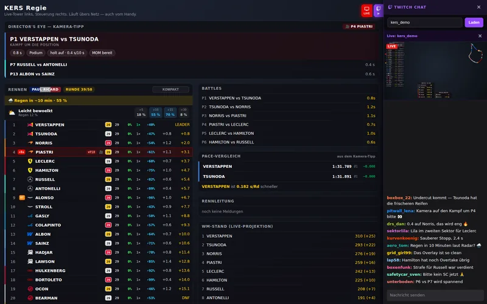

← Overview
Leaks
What is being built, before it is out. Everything here is work in progress — things can still change before the release.
Version 0.3.0
Rebuilt. In C++.
Server and overlay become one single program in C++ and Qt 6. No Python, no Chromium, no second program in the background — and an EXE a quarter of the size.
- Status in testing
- Arrives as update via the button on the control panel
- Source branch cpp-0.3.0 ↗
{kind=link}

The download
0.2.6today
232 MB
0.3.0coming
about 55 MB
- Python + Chromium→native C++ with Qt 6
- Server and HUD separate→one program, one process
- Console window→Log on the control panel
What changes for you
- Starts completely. Open the EXE — control panel, HUD and server come up together. If you don't want the server, start with
--no-server. - One question on the first start. The Windows firewall asks about the network. For the control page and settings from your phone, allow private networks.
- No console window any more. What server and HUD report is under Log on the control panel and in
data\kers.log. - No browser opens by itself. You open the control page and settings via the buttons on the control panel.
- One way of drawing. The renderer choice goes — the HUD is the QML scene, the same one as before.
- Track map stays put. After switching from qualifying to the race, a known circuit's map is there right away.
- One program per port. If an old 0.2.x is still running, the control panel says port in use instead of two programs splitting the packets.
- Your data stays. Settings, championship standings and window position from 0.2.x carry on unchanged. Going back to 0.2.x works via the control panel.
Under the hood
- Language
- C++20 with Qt 6.11, statically linked.
- File
- One EXE, currently 57,897,984 bytes — about 55 MB, no DLLs alongside.
- Structure
- Server, HUD and control panel in one process. The HUD gets its data directly; browser, phone and OBS still via port 5100.
- Tests
- Eight Qt test suites, from the parser to the updater.
- Cross-check
- Roughly 20,000 packets each from a race and a qualifying session through the old and the new version — no deviation.
- Licence
- Own code under MIT. Qt 6 is in the EXE under LGPL-3.0; since everything is open, it can be rebuilt against another Qt version.
When it ships and what comes next — you hear it on Discord first.